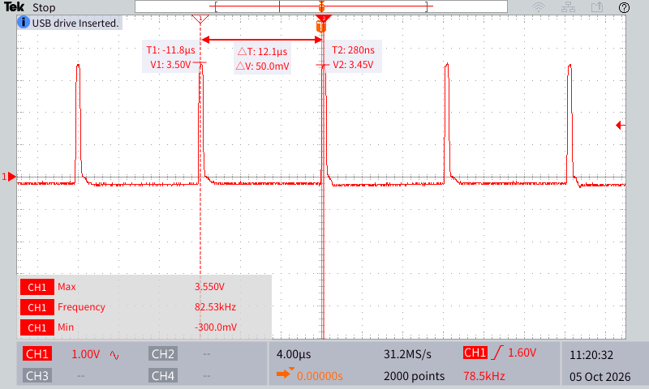
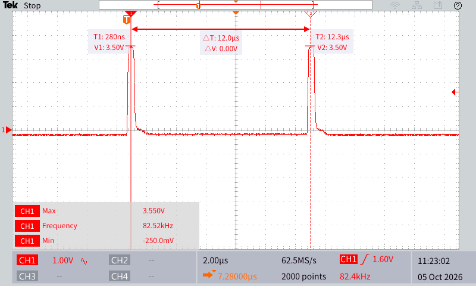
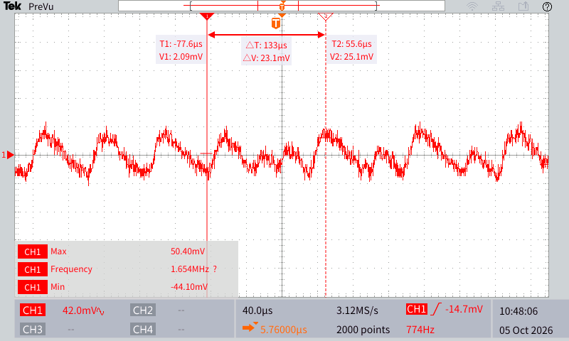
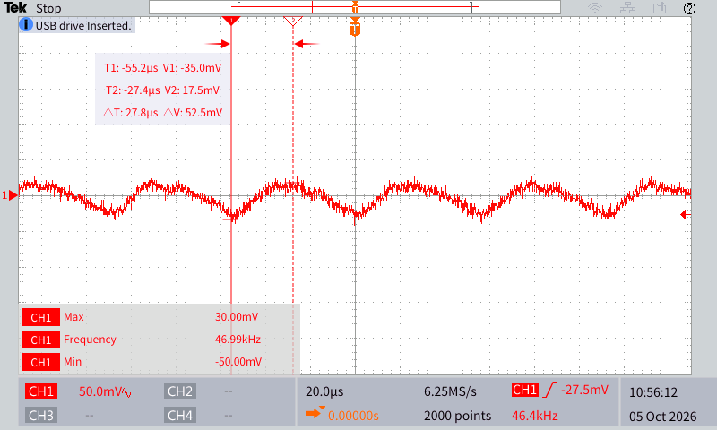

Design, simulate, and fabricate a custom synchronous buck converter PCB as the Engineering Design 2 (EEET2257) project. The converter steps down an input voltage to a regulated output using the LM3524 PWM regulator IC, with all component values derived analytically from first principles and verified through simulation before fabrication.
The final deliverable was a working PCB, demonstrated at the project demo session with measured output voltage, switching frequency, and efficiency presented against design targets.
Component Placement Strategy: The LM3524 was placed centrally to keep both the feedback and gate-drive control traces short. L1 was positioned top-right close to output capacitors C3/C4 to keep the LC output filter tight. Q1 (the MOSFET) was placed on the board edge to allow heatsink attachment if needed — a thermal decision that created a layout trade-off.
Switching Loop Trade-off: Placing Q1 on the edge for thermal management resulted in the switching loop (Q1→D3→L1→C3/C4) spanning most of the board height, increasing parasitic inductance in the high-frequency switching path. At 82.5 kHz this contributed to output ripple slightly exceeding the 66 mV spec. In a revision, Q1 would be shifted upward toward D3 and L1 to tighten the loop while keeping the edge position for heat dissipation.
Ground Plane: A GND polygon pour on the top layer provides a low-impedance ground return across the board. Power traces on the high-current path (Q1, L1, output) were widened compared to signal traces around the LM3524 feedback network to reduce noise coupling into the sensitive feedback loop.
✅ Output voltage: 4.97V at 500mA load — within 0.6% of 5V target.
✅ Switching frequency: 82.5 kHz (oscilloscope measured: 82.52–82.53 kHz) — 0.03% from design target.
✅ Measured efficiency: 82.5% at full load (1A output) — above the 80% threshold.
✅ Output ripple: 50.4 mV pk-pk — below the 66 mV spec despite the extended switching loop.
✅ No oscillation on the output — stable regulation under step load changes (200mA → 1A).
✅ PCB passed DRC with zero errors before fabrication.
Waveforms captured on a Tektronix oscilloscope during the demo session on 5 October 2026.




The schematic defines the topology but the PCB layout determines whether it works. Poor gate drive loop geometry or a split ground plane can make an otherwise correct design oscillate or fail to regulate. High-frequency power electronics demand layout discipline from the first revision.
The timing resistor and capacitor had tolerance errors that shifted the switching frequency from the initial calculation. Measuring actual values with the LCR meter before the final layout and adjusting the design accordingly prevented a frequency miss at demo.
Setting the error amplifier compensation (RF, CF) for stability across the full load range required understanding the loop gain and phase margin. Under-compensation caused output ringing under transient load; over-compensation slowed the transient response. Bode plot analysis guided the final values.